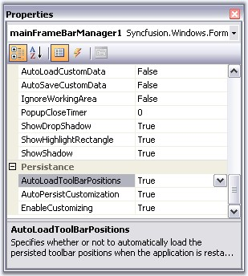
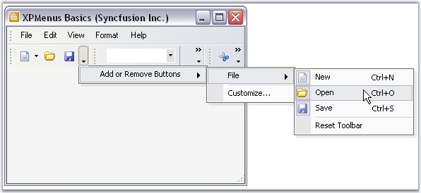
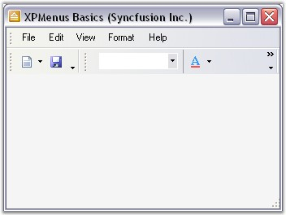

Toolbar state can be saved in two ways.
· Automatic serialization of Tool bar position.
· It can be read/written to different media such as the default Isolated Storage, XML file, XML stream, Binary file, Binary stream and the Windows Registry.
If this is a MainFrameBarManager, the toolbar's positions will be retained during run-time. If it is a ChildFrameBarManager, then the toolbar's positions will be docked to the top border of the main frame.
 Note: This is true, only when your
application is run for the first time and subsequent invocations will use the
user's latest settings, if the persisting toolbar position is turned
on.
Note: This is true, only when your
application is run for the first time and subsequent invocations will use the
user's latest settings, if the persisting toolbar position is turned
on.
The position of the toolbar and the customization applied by the user are stored in the user system's Isolated Storage.
You can turn on/off default persistence through the BarManager's AutoLoadToolbarPositions and EnableCustomizing properties.

Figure 844: Toolbar State Persistence
We can customize the toolbar at run time and it can be stored by setting AutoLoadToolBarPositions property to true. The following screen shot displays the Toolbar customization at run time where BarItem "Open" is removed.

Figure 845: Removing the "Open" Bar Item
Close the application and again run the same application. The removed MenuBarItem "Open" is sustained. The following screen shot illustrates this.

Figure 846: "Open" Bar Item removed from the Toolbar
 Save / Load the Bar
Information
Save / Load the Bar
Information